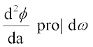

|
Radiometric: Photometric Units |
Most Commom Units | ASAP Commands | |
| Power | Φ | Watts(W):Lumens(L) | STATS /POS/DIR; LIST |
|
Intensity: Luminous Intensity | LI= | W/sr:L/sr |
1) WINDOW; PIXEL; SPOTS DIR ATT 0; DISPLAY; ANGLE display commands (computation is in direction cosine space) 2) RADIANT; $IO VECTOR REWIND DISPLAY; AVE; MESH; $VIEW (computation is in angle space) |
|
Irradiance: Illuminance | E,M= | W/m²:L/m² |
WINDOW; PIXEL; SPOTS POS ATTRI 0 (incoherent) or SPREAD NORM (coherent/incoherent) DISPLAY; display commands |
|
Radiance: Luminance | L=  (radiant intensity as a f[spatial position]) (radiance:luminance) | W/m²sr:L/m²sr | 1) -WINDOW; PIXEL (pixel<5)
RADIANT…..MAP; $VIEW 2) -WINDOW; PIXEL (pixel>5) RADIANT…..AREA (angle res=1); DISPLAY; display commands |
| Complex Field Components | WINDOW; PIXEL; FIELD…;DISPLAY 29… | ||
| Geometric Wavefront | FOCUS MOVE r; WINDOW; PIXEL; OPDMAP; DISPLAY |
| Command | ASAP Menu |
| STATS/LIST | Analysis> Calculate Flux |
| Preview | Preview (when Builder is active and for SPOT POSITION only) |
| FOCUS | Analysis> Focus Rays |
| SPOTS | Analysis> Calculate Flux Distribution |
| SPREAD | Analysis> Calculate Field Energy Distribution |
| FIELD | Analysis> Analyze Beams> Calculate Field Properties |
| RADIANT | Analysis> Radiant> Incoherent Radiant Calculation |
| OPDMAP | Analysis> Make OPD Map |
| DISPLAY | Display> File, Display> Graphics, Display> Processing |